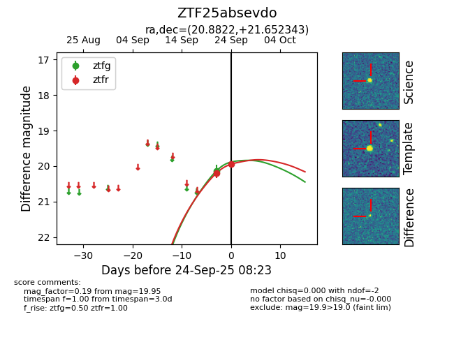
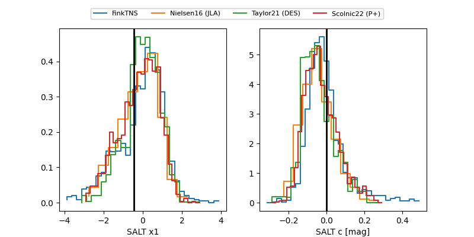

FINK: ZTF25absevdo
Lasair: ZTF25absevdo
ALeRCE: ZTF25absevdo
ZTF25absevdo (ztf,fink)
equatorial (ra, dec) = (20.8822,+21.65234)
galactic (l, b) = (132.7697,-40.60560)


last ztfg=20.14, ztfr=19.95
1 ztfg, 2 ztfr detections